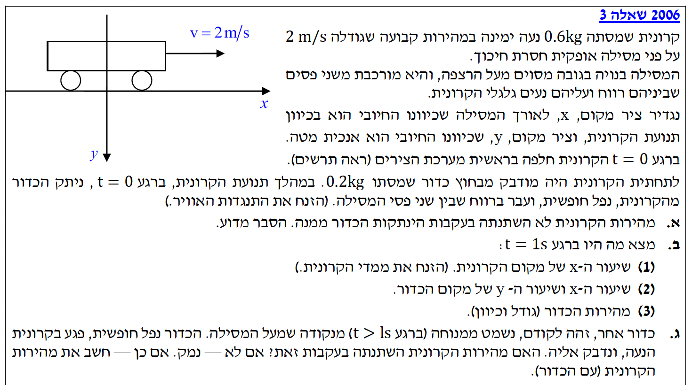

פתרון בגרות בפיזיקה
מכניקה 2006, שאלה 3 (5 יח"ל)
פתרון מלא, מודרך ומוסבר צעד-אחר-צעד, כולל קינמטיקה בשני ממדים ושימור תנע.
עודכן:
--- --:--:--
מבט כללי והגדרת מערכת הצירים
בשאלה זו אנו מנתחים תנועה משולבת של קרונית וכדור. תחילה נבדוק מה קורה כאשר מסה ניתקת מקרונית נעה, ולאחר מכן כיצד פגיעת מסה אחרת משפיעה על התנע של המערכת תוך יישום חוק שימור התנע בממד אחד לעומת ממד אחר.
לפני שניגש לפתרון, חשוב לשים לב היטב להגדרת מערכת הייחוס שנקבעה בשאלה:
- ציר ה-\(x\): אופקי, כיוונו החיובי ימינה.
- ציר ה-\(y\): אנכי, כיוונו החיובי למטה.
- ראשית הצירים \((0,0)\): ממוקמת בנקודה בה הקרונית חולפת ברגע \(t=0\).
מסקנה קריטית מההגדרה: משום שהכיוון החיובי של ציר ה-\(y\) מוגדר כלפי מטה, תאוצת הכובד של גוף בנפילה חופשית (הפועלת תמיד כלפי מטה) תהיה מספר חיובי במערכת זו: \(a_y = +g = 10 \text{ m/s}^2\).

[תמונת השאלה המקורית]
לא נמצאה תמונה בשם question-image.png באותה תיקייה.
מה נתון: קרונית במסה \(M = 0.6 \text{ kg}\) נעה אופקית במהירות \(v_0 = 2 \text{ m/s}\) על מסילה חלקה. כדור במסה \(m = 0.2 \text{ kg}\) מתנתק מתחתיתה ב-\(t=0\). (נתונים ביחידות MKS, אין צורך בהמרה).
מה מחפשים: להסביר מדוע מהירות הקרונית האופקית לא השתנתה בעקבות הניתקות הכדור ממנה.
נוסחאות ועקרונות:
\( \Sigma\vec{F} = 0 \implies \vec{v} = \text{const} \)
\( \Sigma\vec{p}_i = \Sigma\vec{p}_f \)
(החוק הראשון של ניוטון, וכן חוק שימור התנע הקווי)
שיטה א' - ניתוח כוחות (החוק הראשון של ניוטון):
לפני הניתקות הכדור, המערכת נעה אופקית במהירות קבועה (שקול הכוחות האופקיים אפס). ברגע הניתקות, הכדור מתחיל ליפול בהשפעת כוח הכובד שהוא כוח אנכי בלבד.
אין שום כוח אופקי חדש שפועל על הקרונית כתוצאה מהניתקות הכדור (אין חיכוך על המסילה, וכוח הכובד של הכדור פועל כלפי מטה). מאחר ששקול הכוחות בכיוון ציר ה-\(x\) הפועל על הקרונית נותר אפס (\(\Sigma F_x = 0\)), על פי החוק הראשון של ניוטון הקרונית תתמיד במצבה ותמשיך לנוע באותה מהירות קבועה.
שיטה ב' - ניתוח דרך חוק שימור התנע:
ניתן להוכיח זאת גם דרך חוק שימור התנע בציר האופקי. המערכת הכוללת (קרונית + כדור) נעה תחילה במהירות משותפת \(v_0 = 2 \text{ m/s}\). מכיוון שלא פועלים כוחות חיצוניים בכיוון האופקי (אין חיכוך), התנע האופקי הכולל של המערכת נשמר לפני ואחרי הניתקות.
ברגע הניתקות, הכדור ממשיך לנוע אופקית בדיוק באותה מהירות שהייתה לו (התמדה, כי אין כוח אופקי שעוצר אותו באוויר), כלומר מהירותו האופקית היא \(v_{ball,x} = v_0\). נציב זאת במשוואת שימור התנע כדי למצוא את המהירות הסופית של הקרונית \(u_{cart,x}\):
\[ (M + m)v_0 = M \cdot u_{cart,x} + m \cdot v_{ball,x} \]
\[ Mv_0 + mv_0 = M \cdot u_{cart,x} + m v_0 \]
נחסר \(m v_0\) משני אגפי המשוואה ונקבל:
\[ Mv_0 = M \cdot u_{cart,x} \implies u_{cart,x} = v_0 \]
מסקנה (משתי השיטות): מהירות הקרונית לא משתנה ונותרת \(2 \text{ m/s}\).
הערת מורה: מלכודת אינטואיטיבית בשימור תנע!
תלמידים רבים נוטים לומר אינטואיטיבית ש"אם המסה של המערכת קטנה, המהירות של הקרונית צריכה לגדול כדי שהתנע הכולל יישמר". זו שגיאה נפוצה! כפי שראינו בשיטה ב', הכדור המתנתק "לוקח" איתו את התנע האופקי שלו (\(m v_0\)), ולכן החלק שנותר לקרונית מתוך התנע הכולל אינו גדל, והקרונית ממשיכה בדיוק באותה מהירות.
מה נתון: עבור הקרונית: מיקום התחלתי \(x_0 = 0 \text{ m}\), מהירות התחלתית \(v_0 = 2 \text{ m/s}\), תאוצה \(a_x = 0 \text{ m/s}^2\). זמן נבדק \(t = 1 \text{ s}\).
מה מחפשים: את מיקום הקרונית \(x_{cart}\) ברגע \(t = 1 \text{ s}\).
נוסחאות מהדף (קינמטיקה):
\( x = x_0 + v_0 t + \frac{1}{2}at^2 \)
חישוב:
נציב את הנתונים הידועים עבור הקרונית במשוואת המקום-זמן:
\[ x_{cart}(t=1) = 0 + 2 \cdot 1 + \frac{1}{2} \cdot 0 \cdot (1)^2 \]
\[ x_{cart} = 2 \text{ m} \]
מסקנה: שיעור ה-\(x\) של הקרונית הוא \(2 \text{ m}\).
מה נתון: ציר \(x\): \(v_{0x} = 2 \text{ m/s}\) (מתורה גליליית), \(a_x = 0\), \(x_0=0\).
ציר \(y\): משוחרר ממנוחה \(v_{0y} = 0\), תאוצה למטה חיובית \(a_y = +10 \text{ m/s}^2\), \(y_0=0\). זמן \(t = 1 \text{ s}\).
מה מחפשים: קואורדינטות הכדור \(x_{ball}, y_{ball}\) ברגע \(t = 1 \text{ s}\).
נוסחאות מהדף:
\( x = x_0 + v_{0x} t \) (כי \(a_x=0\))
\( y = y_0 + v_{0y} t + \frac{1}{2} a_y t^2 \)
חישוב בשני הצירים:
ציר אופקי (x)
\[ x_{ball}(t=1) = 0 + 2 \cdot 1 = 2 \text{ m} \]
ציר אנכי (y)
\[ y_{ball}(t=1) = 0 + 0 \cdot 1 + \frac{1}{2} \cdot 10 \cdot (1)^2 \]
\[ y_{ball}(t=1) = 5 \cdot 1 = 5 \text{ m} \]
מסקנה: שיעורי המקום של הכדור הם \( x = 2 \text{ m} \) ו- \( y = 5 \text{ m} \).
הערת מורה:
שימו לב למשהו יפהפה מבחינה פיזיקלית: הקואורדינטה האופקית של הכדור ושל הקרונית זהה לחלוטין! מאחר ששניהם התחילו מאותו מקום ונעים באותה מהירות אופקית, הכדור יימצא תמיד בדיוק מתחת לקרונית תוך כדי הנפילה שלו.
מה נתון: מהירויות התחלתיות ותאוצות לפי צירים מהסעיפים הקודמים. הזמן הוא \(t=1 \text{ s}\).
מה מחפשים: את וקטור המהירות השקול \(\vec{v}\) (גודל וכיוון ביחס לאחד הצירים).
נוסחאות מהדף:
\( v = v_0 + at \)
\( |\vec{v}| = \sqrt{v_x^2 + v_y^2} \)
\( \tan\theta = \frac{|v_y|}{|v_x|} \)
מציאת הרכיבים והווקטור השקול:
חישוב המהירות בכל ציר בנפרד
\[ v_x = v_{0x} + a_x t = 2 + 0 \cdot 1 = 2 \text{ m/s} \]
\[ v_y = v_{0y} + a_y t = 0 + 10 \cdot 1 = 10 \text{ m/s} \]
חישוב גודל המהירות השקולה וכיוונה
נשתמש במשפט פיתגורס למציאת הגודל, ונגדיר את הזווית \(\alpha\) ביחס לציר ה-\(x\) החיובי:
\[ |\vec{v}| = \sqrt{2^2 + 10^2} = \sqrt{104} \approx 10.2 \text{ m/s} \]
\[ \tan\alpha = \frac{v_y}{v_x} = \frac{10}{2} = 5 \implies \alpha \approx 78.69^\circ \]
מסקנה: גודל המהירות הוא \(10.2 \text{ m/s}\), בזווית \(78.69^\circ\) מתחת לציר ה-\(x\) החיובי.
כלל זהב בווקטורים:
לעולם אין לחבר מהירויות מצירים שונים בחיבור אלגברי רגיל (לא עושים \(2+10=12\)). מהירות היא וקטור! חייבים תמיד להשתמש בפיתגורס כדי למצוא את האלכסון השקול. אל תשכחו לציין את ציר הייחוס של הזווית.
מה נתון: כדור זהה \(m = 0.2 \text{ kg}\) הופל ממנוחה (ביחס לקרקע), ולכן מהירותו האופקית ברגע הפגיעה היא \(v_{ball,x} = 0 \text{ m/s}\). הקרונית נעה אופקית במהירות \(v_{cart,x} = 2 \text{ m/s}\) ומסתה \(M = 0.6 \text{ kg}\). מתרחשת התנגשות פלסטית (הגופים נדבקים).
מה מחפשים: האם מהירות הקרונית תשתנה? אם כן, למצוא את המהירות המשותפת החדשה \(u_x\).
נוסחאות מהדף:
\( m_A \vec{v}_A + m_B \vec{v}_B = m_A \vec{u}_A + m_B \vec{u}_B \) (חוק שימור התנע הקווי)
ניתוח ההתנגשות והחישוב:
מדוע המהירות תשתנה? בניגוד לסעיף א', כאן מסה נופלת ממנוחה אופקית אל תוך קרונית נעה. כדי להאיץ את הכדור (שמהירותו האופקית אפס) למהירות המשותפת החדשה, הקרונית מפעילה עליו כוח אופקי קדימה בזמן ההידבקות. לפי החוק השלישי של ניוטון, הכדור יפעיל על הקרונית כוח שווה נגדי (אחורה), מה שיגרום לגודל המהירות של הקרונית לקטון.
נציב נתונים במשוואת שימור התנע האופקית (בהתנגשות פלסטית \(\vec{u}_A = \vec{u}_B = u_x\)):
\[ M \cdot v_{cart} + m \cdot v_{ball} = (M + m) \cdot u_x \]
\[ 0.6 \cdot 2 + 0.2 \cdot 0 = (0.6 + 0.2) \cdot u_x \]
\[ 1.2 = 0.8 \cdot u_x \]
\[ u_x = \frac{1.2}{0.8} = 1.5 \text{ m/s} \]
מסקנה: כן, המהירות תשתנה. הקרונית והכדור ינועו יחד ימינה במהירות של \(1.5 \text{ m/s}\).
הערת מורה:
למה לא שמרנו תנע גם בציר האנכי (y)? הרי הכדור הכה בקרונית גם שם! התשובה היא שבציר ה-\(y\) כן פועלים כוחות חיצוניים: מסילת הרצפה מפעילה כוח נורמלי מתפרץ עצום כלפי מעלה בזמן הפגיעה כדי למנוע מהקרונית לקרוס פנימה לתוך הרצפה. כוח זה מהווה "מתקף חיצוני" שמונע שימור תנע אנכי. בציר ה-\(x\) המסילה חלקה ואין גורם חיצוני מתערב, לכן שם התנע נשמר במלואו.